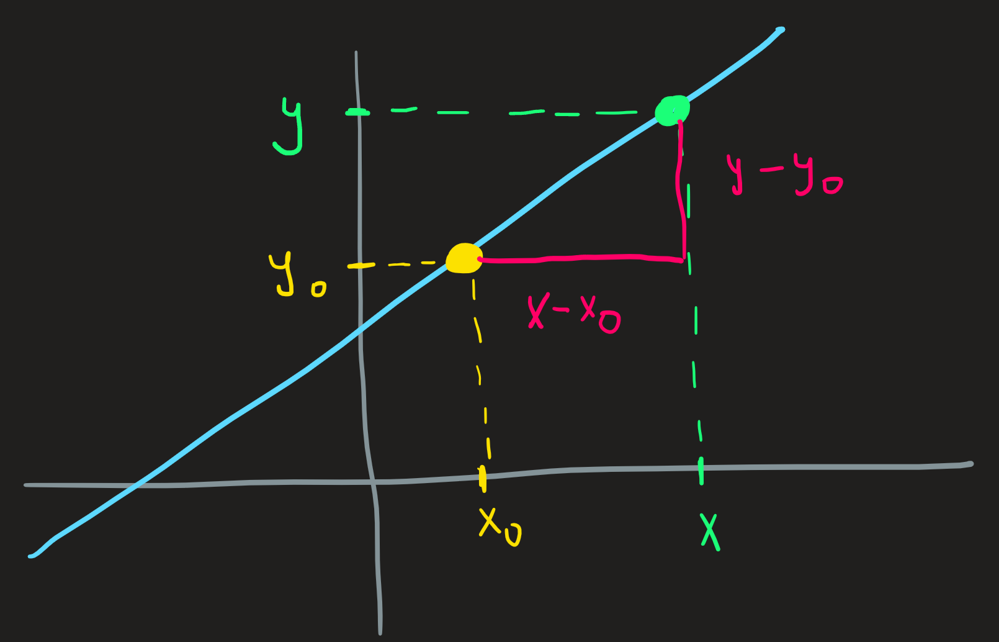
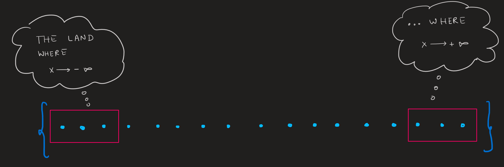
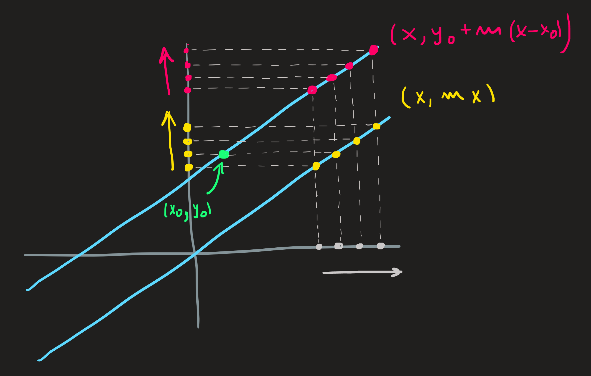
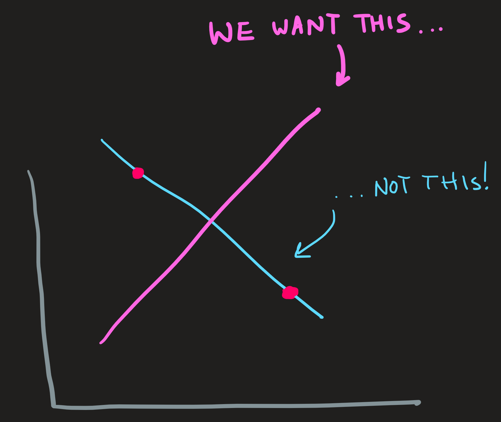
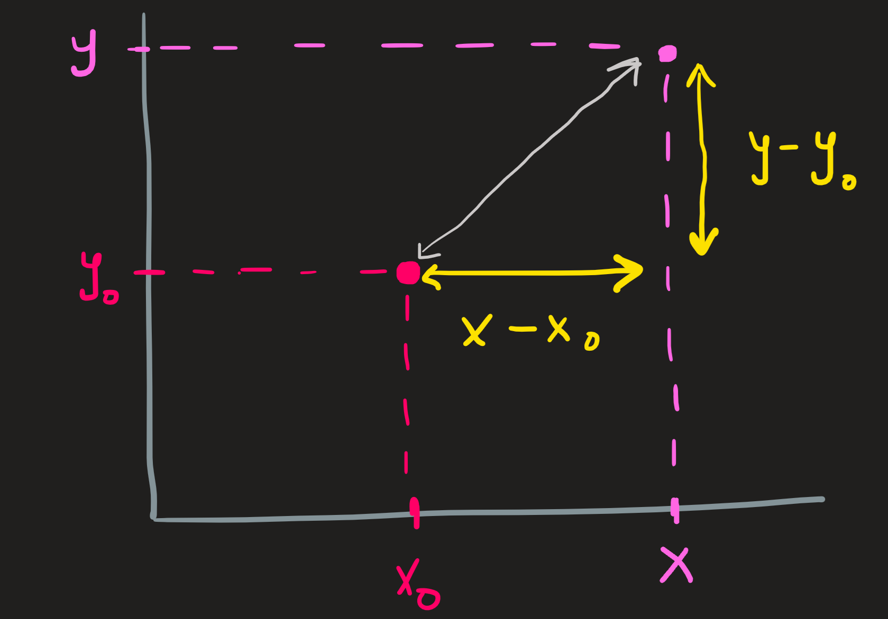
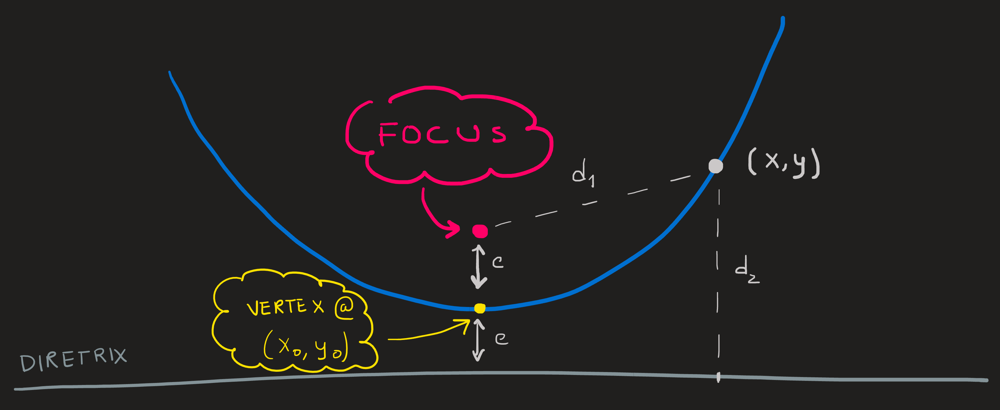
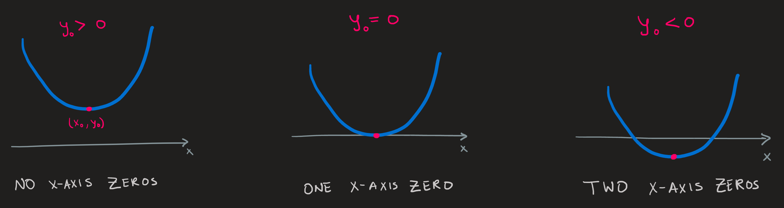

Examples of Polynomials
Introduction
In this section we analyse polynomials of degree one and two. These notes include the mediatrix equation for degree one and the focus-diretrix formulation for degree two.
Atomic polynomials
The simplest polynomial involve procedures of the form \(1\), \(x\), \(x^2\), \(x^3\), etc. These functions are given by
\[ \begin{align} e_n:\,\, \mathbb{R} &\longrightarrow\mathbb{R}\\x &\longmapsto e_n(x):= x^n \end{align} \tag{1}\]
for an integer \(n\) of our choice. The function Equation 1 can also be given under the relation notation by:\[ E_n:= \{(x,y)\in\mathbb{R}^2\,\,|\,\, y=x^n\} \tag{2}\]
The graphical version of these functions for \(n=0,1,2,3\) is:

The graph shows the slice of the functions \(E_n\) where \(x\) runs from \(-1.5\) up to \(1.5\) and not the whole function, which according to Equation 1 or Equation 2 has the domain ranging on all reals \(\mathbb{R}\). The slice was chosen because it exhibits interesting part of the function: the region where it intercept the axes (the zeros of the function) and shows maxima/minima.
Properties of the atomic polynomials
Rather than showing a picture of a small slice of the function as de did in Figure 1 we can instead zoom into some aspects of it.
Properties of the connectivity between domain and codomain:
- Range: From inspection of Equation 1 (or Equation 2) we know the domain and codomain of these four functions is \(\mathbb{R}\). The range of these functions is the image of the domain under the action of the function, we can infer what this image is by inspecting Figure 1, for example, the image of \(\mathbb{R}\) under the action of \(e_2\) is the set of all positive reals as we check by the red curve hence we write \(e_2(\mathbb{R})=\mathbb{R}^+_0\). Similarly we find:
\[ e_0(\mathbb{R})=\{1\} \qquad e_1(\mathbb{R})=e_3(\mathbb{R})=\mathbb{R}\qquad e_2(\mathbb{R})=\mathbb{R}^+_0 \]
Onto: We also observe that for even powers of \(n\) such as \(e_0\) and \(e_2\), not all elements in the codomain \(\mathbb{R}\) are hit by outputs, i.e., these are not onto function; as an example, [is \(0\) hit by some \(e_0(x)\) ? Is \(-1\) hit by \(e_2(x)\), for some \(x\) in its domain?] We can answer these question by trying to solve the equations \(e_0(x)=0\) and \(e_2(x)=-1\). To no avail! Neither have solutions \(x\) in the domain \(\mathbb{R}\).
1-1: Additionally nor are these even powers 1-1. Why? Because we can clearly see from Figure 1 that \(e_0\) is in fact the worst possible “labeller”, where all “fruits” \(x\) have exactly the same label \(1\), no other “label” in its codomain \(\mathbb{R}\) is put into good use by this \(e_0\); the function \(e_2\) is not as bad since for each label we find just two elements in \(\mathbb{R}\). The functions \(e_1\) and \(e_3\) are 1-1 since each element \(x\) in their domain have a unique element \(y\) in the codomain, hence if we choose a label \(y\) we uniquely know the \(x\). Summarizing:
\[ \begin{cases}e_0 \qquad &\text{worst possible labeler (one label for all inputs)}\\e_2 \qquad &\text{bad labeller (one label for each pair of inputs)}\\e_1\,\, \text{and}\,\, e_3 \qquad &\text{perfect (one label, one input)}\end{cases} \]
Properties at interesting regions of the function:
Who is bigger or smaller? The Figure 1 reveals something funny:
for points on the horizontal axis close to the origin, that is \(-1<x<1\), the outputs of the four functions have the following rank \(x^3 < x^2 < x^1 < x^0\);
precisely at \(x=1\) we find they are all the same \(x^0=x^1=x^2=x^3=1\);
meanwhile for the remaining points, those in the region \(x<-1 \lor 1<x\), the absolute value of these functions follow the reversed rank! \(x^0<x^1<x^2<x^3\).
For \(x\) very far from \(1\) we find \(x^0\ll x^1\ll x^2\ll x^3\), which means, for example, that \(|x^3|\) is much, much, much, much larger then \(|x^2|\), and so on.
In summary:
\[ \begin{cases} x^3 < x^2 < x^1 < x^0 \qquad &\text{for $x$ close to 1}\\x^0=x^1=x^2=x^3 \qquad &\text{for $x=1$}\\x^0\ll x^1\ll x^2\ll x^3 \qquad &\text{for $x$ far from $1$} \end{cases} \tag{3}\]
This summary will be important when we study the limiting behavior of molecular polynomials.
Zeros: The zeros of a function are the coordinates of the points which intercept the axes. Observing Figure 1 we see polynomial \(1\) intercepts the y-axis at \((0,1)\) while all other polynomials intercept the x-axis and y-axis exactly at the origin \((0,0)\).
Maxima and minima: By inspection of Figure 1, we observe the polynomials \(1\) has no maxima or minima, it is always flat; \(x\) and \(x^3\) on the other hand is a ramp, a never ending one, and thus also does not have a maximum or minimum. The only function exhibiting a minimum is \(x^2\), coincidentally, at \((0,0)\). Only when we study derivatives we’ll have the computational means to find these extrema.
Commentary
The previous list of properties was already embedded in Figure 1 (or if you think about it, already at Equation 2), only by close observation we made it explicit. Of course, the list is not exhaustive, many other properties remain hidden in that picture, waiting to be dug out. This is why I said this list are a zoom into the picture, when we get closer we see more detail.
As additional examples we could also ask how fast a polynomial of degree one increases, i.e., what is its slope; for polynomials of degree two it would make sense to ask if it its graph is a cup or a cap, it all depends on \(a_2\) parameter.
We usually do not list the properties just as we did above, we just acknowledge in our mind that they exist and compute them as needed, since many times some of them are so bluntly obvious just by looking at the graph or the function formula, that no need is required for a calculation.
Molecular polynomials
Combining atomic polynomials through linear combinations we obtain molecular polynomials.
Recall
A linear combination is an expression where things are multiplied by constants and then added. Here is an example
\[ 4x^3+5x+2 \]
The constants \(4\), \(5\) and \(2\) multiply \(x^3\), \(x^1\) and \(x^0\); which are then summed. Notice how \(x^0\) is hidden, to find it, remember that \(2 =2\times 1\) and \(1=x^0\).
Polynomials of degree one are lines
Polynomials of degree one are lists of ordered pairs of the form:
\[ \{(x,y)\in \mathbb{R}^2\,\,|\,\, y=a_1 x+a_0\} \tag{4}\]
The constants \(a_1\) and \(a_0\) are either given to us or we must choose them - we say they are parameter of the function - they are the weights of \(x^1\) and \(x^0\) in the linear combination \(a_1x+a_0\). Here are some examples of choices:
\[ \begin{align} &\{(x,y)\in \mathbb{R}^2\,\,|\,\, y = -2x \}\\ &\{(x,y)\in \mathbb{R}^2\,\,|\,\, y = 2x \}\\ &\{(x,y)\in \mathbb{R}^2\,\,|\,\, y = x+1 \}\\ &\{(x,y)\in \mathbb{R}^2\,\,|\,\, y = -2x-1 \} \end{align} \]
Graphically these corresponds to lines in a plane:
In maths, sometimes, changing just the aesthetic of the problem can bring great insight into what it means. Here is some changes into the aesthetic of the equation \(y=a_1x+a_0\):
\[ y=a_1x+a_0 = a_1 x + a_0 + a_1 x_0 -a_1 x_0 = a_1(x-x_0)+(a_0+a_1x_0) \tag{5}\]
Now define the following quantities:
\[ m:=a_1 \qquad y_0:=a_0+a_1x_0 \tag{6}\]
Even if you have no clue how this can be a good idea, just wait and appreciate the consequences - the equation \(y=a_1x+a_0\) shows up dressed differently:
\[ y=m(x-x_0)+y_0 \tag{7}\]
the new clothing is introduced in Equation 6 .
It look different, a new aesthetic, but it is still the same equation as \(y=a_1x+a_0\) because the parameters \(a_1\), \(a_0\), \(m\), \(x_0\) and \(y_0\) are related through the equations Equation 6. If values of some of these parameters are given, these equations can be used to compute the other.
As example: You give \(a_0\) and \(a_1\) and I can compute \(x_0\) and \(y_0\). How? If you give me \(a_0=3\) and \(a_1=2\), I pick an arbitrary \(x_0\), for example \(x_0=4\) and compute
\[ y_0=3+2\times 4=11 \]
In conclusion we have two equations aesthetically different but exactly the same:
\[ y=2x+3 \iff y=2(x-4)+11 \tag{8}\]
The right hand side aesthetic is much better because it allow us to see easily how fast these polynomials of degree one increase.
How fast does the function increase?
The constant \(m\) (the \(2\) in Equation 8) is called the slope of the line, what does it mean the value of the slope? The meaning of this constant - in fact any constant in mathematics - can be deduced by analyzing the equation in which it appears. In this case, we understand \(m\) by understanding \(y=m(x-x_0)+y_0\), rearranging it we find:
\[ m=\frac{y-y_0}{x-x_0} \tag{9}\]
which tells us that \(m\) is a ratio of two distances, the height of the triangle \(y-y_0\) and the length of the base of the triangle \(x-x_0\).

Since \(m\) is the ratio of these two distances, its sign determines weather the function is increasing or not. Observing Figure 1 we see \(x-x_0>0\) and \(y-y_0>0\) therefore for this particular choice of two points we find \(m>0\), the same conclusion would hold for any other. When \(m\) is positive, then the \(y\)’s in \((x,y)\) increase when the \(x\)’s increase as well.
By the same line of reasoning the \(m<0\) would correspond to decreasing function, one where as \(x\) increases then the \(y\)’s decrease. And by the way, \(m=0\) correspond to horizontal lines but these are polynomials of degree zero and not of degree one. The larger \(m\) becomes the closer the line is to a vertical line, but it never truly becomes a vertical line.
We can actually arrive at these conclusions just looking at \(y=m(x-x_0)+y_0\), no rearranging required: when \(m\) is positive, then the greater \(x-x_0\) is, the more we add to the default value \(y_0\), thus the \(y\) must increase; if on the other hand \(m\) is negative, the term \(m(x-x_0)\) can only become more negative as \(x-x_0\) increases, thus lowering the value of \(m(x-x_0)+y_0\), that is, the value of \(y\), the function must be decreasing when \(x-x_0\) increases.
Zeros
What are the zeros in \(P_1\)? Look at Figure 2, there are (in this case) two types of zeros: \(x\)-zeros and \(y\)-zeros. The \(x\)-zeros occur when the \(x\) coordinate is zero and the \(y\)-zeros when \(y\) is zero. In other words, the zeros of a polynomials of degree one are the ordered pairs (in \(P_1\)) that satisfy either one of these equations:
\[ \begin{equation}\begin{cases}y=y_0+m(x-x_0)\\y=0\end{cases}\qquad\qquad\begin{cases}y=y_0+m(x-x_0)\\x=0\end{cases}\end{equation} \]
\[ \begin{equation}\begin{cases}y_0=a_1x_0+a_0\\y=0\end{cases}\qquad\qquad\begin{cases}y=a_1x+a_0\\x=0\end{cases}\end{equation} \]
\[ (x_0,0)\in \{(x,y)\in \mathbb{R}^2\,\,|\,\, y = a_1x+a_0 \} \]
\[ (0,y_0)\in \{(x,y)\in \mathbb{R}^2\,\,|\,\, y = a_1x+a_0 \} \]
Solving the first systems of equations we get \(x=(0-y_0)/m+x_0\) and solving the second \(y=y_0+m(0-x_0)\). Hence we know zeros of \(P_1\):
\[ \begin{align} &\textit{x-zero:} \qquad (0,y_0-mx_0)\\ &\textit{y-zero:} \qquad (x_0-y_0/m,0) \end{align} \]
When \(x\) is large, then what?
We can get to know qualitatively what happens with points coordinates of \(P_1\) at its extreme ends of the set by supposing \(x\) is a very, very large number; there is however an important key point: we are not particularly worried about a specific large value of \(x\), like \(x=10^{100}\) , and its corresponding \(y\); what we really want to know is - as \(x\) is getting larger and larger, how does \(y\) behave then? It is a dynamical process, not a specific evaluation of the function.

Paraphrased differently, we want to know what happens to \((x,y)\) during the process of making \(x\) bigger and bigger? To state that \(x\) is getting bigger and bigger, we write \(x\longrightarrow \infty\). In such a dynamic case, what happens with the value \(y\)? Meaning, what is the dynamic solution \(y\) of the system:
\[ \begin{equation}\begin{cases}y=y_0+m(x-x_0)\\x\longrightarrow +\infty\end{cases}\end{equation} \tag{10}\]
Lets make an intuitive guess about the solution of this problem (later, when we study limits we’ll see a more systematic way to solve these problems), the Figure 3 helps a lot. To understand how the values of \(y\) behave when \(x\) increases, we have to understand how the calculation \(y_0+m(x-x_0)\) behaves, when we keep increasing \(x\). A key aspect of it, is that the term \(m x\) gets larger and larger while \(y_0-mx_0\) remains a constant, eventually, \(mx\) is so much larger than this constant (we are increasing \(x\) after all) that our original equation \(y=y_0+m(x-x_0)\) becomes approximately given by \(y\sim mx\). The functions \(y_0+m(x-x_0)\) and \(mx\) are different! But when \(x\) is large they are very similar because the constant \(y_0-mx_0\) becomes irrelevant. Now we shift our focus to the approximate equation and try to solve it:
\[ \begin{equation}\begin{cases}y\sim mx\\x\longrightarrow +\infty\end{cases}\end{equation} \tag{11}\]
This is easy, because its just an atomic polynomial. The dynamical solution to this problem is [ \(y\) will increase when \(x\) increases], we write the answer as \(y\longrightarrow +\infty\) when \(m\) is positive. As a consequence the answer to Equation 10 is also \(y\longrightarrow +\infty\).
Observe that the function \(y\sim mx\) is not equal to \(y=y_0+m(x-x_0)\), and thus their graphs are not equal, but when \(x\) is very large, they are similar, see picture below. Solving Equation 11 we automatically get the answer to the problem Equation 10 . Both answers are \(y\longrightarrow+\infty\).

If on the other hand \(m\) is negative then, by the same reasoning, \(y\) also becomes very negative.
Awful Exercise: What happens to \(y\) when \(x\longrightarrow-\infty\)?
What is the line’s equation that passes through two given points?
As we have seen a polynomial of degree one can either be specified by providing the parameters \(a_0\) and \(a_1\) or alternatively (as the author prefers by the way) by providing a point \((x_0,y_0)\) on the line and a slope value \(m\). This is what we know so far. In this section we see a third way of specifying one of these polynomials, namely, to provide the coordinates of any two distinct point on the line \((x_0,y_0)\) and \((x_1, y_1)\). We can already sense it, somehow the two point must determine \(a_0\) and \(a_1\) or \((x_0,y_0)\) and \(m\).
Here is how to do it:
Have the two point \((-2,3)\) and \((3,-7)\). These are a given. No action needed.
Assume they both belong to the same line, i.e.,
\[ \begin{align} (-2,3)\in \{(x,y)\in \mathbb{R}^2\,\,|\,\, y = a_1x+a_0 \}\\ (3,-7)\in \{(x,y)\in \mathbb{R}^2\,\,|\,\, y = a_1x+a_0 \} \end{align} \tag{12}\]
for some \(a_1\) and \(a_0\) still unknown but we wish to determine. These two statements characterize the parameters \(a_1\) and \(a_0\).
We want to compute the values of \(a_0\) and \(a_1\) that make true the statements Equation 12. The statements Equation 12 are equivalent to the following system of equations:
\[ \begin{cases} 3=a_1\times(-2)+a_0\\ -7=a_1\times 3 +a_0 \end{cases} \]
Just plug in the point coordinates into the element-hood test of the sets \(y=a_1x+a_0\).
Solve the system of equations using substitution, the solution is:
\[ a_0=-1 \qquad a_1=-2 \]
The polynomial’s formula that passes through both points is:
\[ y=-2 x-1 \tag{13}\]
An alternative method is to find \(m\) from the coordinates of the two point using the formula Equation 9 and then set \((x_0,y_0)\) in \(y=m(x-x_0)+y_0\) as either one of the two point.
Here are the steps:
- Compute \(m = (-7-3)/(3-(-2)) = -2\). Warning! When using Equation 9, make sure you order the two point by the \(x\)-coordinate. In this example I assigned \((x_0,y_0)=(-2,3)\) and \((x_1,y_1)=(3,-7)\) because \(-2<3\). This guarantees the denominator of Equation 9 is positive.
- Choose the \(x_0\) and \(y_0\) in \(y=m(x-x_0)+y_0\) as either \((-2,3)\) or \((3,-7)\). I choose
\[ (x_0,y_0) = (3,-7) \]
Write the final result:
\[ y=-2(x-3)-7 \]
which is equivalent to Equation 13.
Mediatrix Equation
With similar flavor as a line that passes through two point, our goal now is to find the equation of the line that is perpendicular to the line that passes through the point and is equidistant from the two points.
The word equidistant my cause some head scratching, here’s a picture

For each point \((x,y)\) on the pink line compute the distance from the red points, these two distances must be the same. This is what describes the mediatrix line (in pink).
Recall
The distance, \(d\), between the point \((x_0,y_0)\) and the point \((x,y)\)

is given by the Pythagoras theorem:
\[ d^2 = (x-x_0)^2+(y-y_0)^2 \]
Formally, lets say the red points have coordinates \((x_0,y_0)\) and \((x_1,y_1)\), our function is composed by the points which is equidistant from both, in mathematical notation, the mediatrix line is given by:
\[ \{(x,y)\in\mathbb{R}^2\,\,|\,\, (x-x_0)^2+(y-y_0)^2 = (x-x_1)^2+(y-y_1)^2\} \tag{14}\]
Lets simplify the element-hood test:
\[ \begin{align} &(x-x_0)^2+(y-y_0)^2 = (x-x_1)^2+(y-y_1)^2\\ \iff &x^2-2x_0x+x_0^2 + y^2-2y_0y+y_0^2 = x^2-2x_1x+x_1^2 + y^2-2y_1y+y_1^2\\ \iff & 0= 2(y_0-y_1)y + 2(x_0-x_1)x+y_1^2-y_0^2+x_1^2-x_0^2\\ \iff & y = -\frac{x_0-x_1}{y_0-y_1}x +\frac{1}{2}(y_1^2+x_1^2-y_0^2-x_0^2)\\ \iff & y = -\frac{1}{m} x + \frac{1}{2}\Delta^2 \end{align} \]
where in the last line I lumped terms into the parameters \(m\) and \(\Delta\).
\[ m:=\frac{y_1-y_0}{x_1-x_0}\qquad \Delta^2:=y_1^2+x_1^2-y_0^2-x_0^2 \]
\(m\) is the slope of the line that contains the red points, while \(\Delta^2\) is the difference between the squared-distances of the red points with respect to the origin.
As we can see the second powers in the element-hood test cancel and what remain is the equation \(y = -\frac{1}{m} x + \frac{1}{2}\Delta^2\), which is just a linear combination of \(x\) and \(x^0\) with weights \(-1/m\) and \(\Delta^2/2\), the hallmark of a line equation of the line. We conclude, the set Equation 14 is equal to
\[ \{(x,y)\in\mathbb{R}^2\,\,|\,\, y = -\frac{1}{m} x + \frac{1}{2}\Delta^2\} \]
Comparing with Equation 4 we identify \(a_1 =-1/m\) and \(a_0=\Delta^2/2\).
Second order polynomials are parabolas
The relation definitions of these types of polynomials is:
\[ \{(x,y)\in\mathbb{R}^2\,\,|\,\, y = a_2 x^2+a_1 x+a_0\} \tag{15}\]
for some real parameters \(a_0\), \(a_1\) and \(a_2\), having \(a_2 \not = 0\) guarantees this is a second order polynomial.
Here are some choices of parameters and the corresponding graphs:

The graph above exhibits the windows on the set Equation 15 where interesting behavior of these functions occur, by interesting, I mean, we see see the x-axis and y-axis intersections as well as minima and maxima; outside of the picture, these function either increase or decrease monotonically toward infinity, that’s uninteresting since nothing else happens there.
To know these function even better it is useful to compute by hand (analytically) some important characteristics:
y-axis intercept: we want to know the coordinates on Equation 15 of the form \((0,y_0)\).
\[ (0,y_0)\in \{(x,y)\in\mathbb{R}^2\,\,|\,\, y = a_2 x^2+a_1 x+a_0\} \iff y = a_2 \times 0 +a_1\times 0+ a_0 \iff y=a_0 \]
Thus the point \((0,a_0)\) is the interception of the polynomial with the vertical axis.
x-axis intercept: seeking point of the form \((x_0,0)\) requires us to solve the equation
\[ (x_0,0)\in \{(x,y)\in\mathbb{R}^2\,\,|\,\, y = a_2 x^2+a_1 x+a_0\}\iff 0 = a_2 x_0^2+a_1 x_0+a_0 \]
To solve the second order equation we may use the Resolvent Formula if a solution exists. More on this later.
when \(x\) is large (far from \(1\)): the process of progressively increasing \(x\) and seeing what happens to the corresponding \(y\)’s.
The idea is to “solve” the dynamical problem:
\[ \begin{cases}y = a_2 x^2+a_1 x+a_0\\ x\longrightarrow \pm\infty \end{cases} \tag{16}\]
by computing how \(y\) behaves when \(x\) increases without bound.
We solve this problem using our knowledge of how the atomic polynomials behave individually, see the last ordering relation in Equation 3. We know that when \(x\) is far from \(1\) we must have:
\[ a_0 \ll a_1 x \ll a_2x^2 \]
Since \(a_2x^2\) term is much larger than \(a_1 x\) and \(a_0\), we can drop them from the equation \(y=a_2x^2+a_1 x+a_0\) , doing so giving us an approximate equation, \(y \sim a_2 x^2\), which is simple and thus easy to graph. The graph of both functions is very similar.
Exact equation for all \(x\) Approximate equation when \(x\) is large \(y = a_2 x^2+a_1 x+a_0\) \(y \sim a_2 x^2\) That means, if you know how to solve
\[ \begin{cases}y \sim a_2 x^2\\x\longrightarrow \pm\infty \end{cases} \tag{17}\]
you know how to solve Equation 16 . But Equation 17 is easy, since it is just an atomic polynomial: if \(x\) gets larger and larger then \(y\) gets larger and larger, the solution is \(y\longrightarrow +\infty\), and we conclude the same thing must happen in Equation 16. Problem solved, but solving a similar but simpler problem!
Focus-diretrix formulation
Observing Figure 4 we observe two points: the vertex with coordinates \((x_0,y_0)\) and the focus \(c\) units above at \((x_0,y_0+c)\). A parabola is by definition the set of points which:
Contain the vertex;
A point \((x,y)\) is in the parabola if
[distance from \((x,y)\) to focus] = [vertical distance from \((x,y)\) to diretrix]
The diretrix is the horizontal line \(c\) units below the vertex, as shown in Figure 4 .
When \(c>0\) the polynomials describes a cup whose minimum is the vertex; when \(c<0\) it describes a cap whose maximum is the vertex.

Lets express condition 1. and 2. using mathematical notation.
Using the distance formula we seen above, we can express both distances in terms of the coordinates of the vertex and focus points as
\[ \begin{cases}d_1^2=(x-x_0)^2+(y-(y_0+c))^2\\d_2^2=(y-(y_0-c))^2\end{cases} \]
Condition 2. becomes:
\[ \begin{align} &(x-x_0)^2+(y-(y_0+c))^2 =(y-(y_0-c))^2\\ \iff &(x-x_0)^2+y^2-2(y_0+c)y+(y_0+c)^2 = y^2-2(y_0-c)y+(y_0-c)^2\\ \iff &(x-x_0)^2+y^2-2(y_0+c)y+y_0^2+2y_0c+c^2 = y^2-2(y_0-c)y+y_0^2-2y_0c+c^2\\ \iff&(x-x_0)^2-4cy+4y_0c=0\\ \iff&y=y_0 + \frac{1}{4c}(x-x_0)^2 \end{align} \]
Commentary
Comparing such calculation with the mediatrix equation we see that the diretrix distance \(d_2\) does not have terms involving \(x\) which guarantees that no cancellation of the \(x\) terms in \(d_1\) thereby preserving its power of \(2\), essential for a polynomial of degree \(2\).
This is the element-hood test for the points in the parabola allowing us describe the set the parabola as the set of pairs
\[ \begin{equation}P_2:= \{(x,y)\,\,|\,\,d_1=d_2\}=\{(x,y)\,\,|\,\,y-y_0=\frac{1}{4c}(x-x_0)^2\}\end{equation} \tag{18}\]
Using the procedure point of view we write:
\[ \begin{equation}\begin{split}p_2:\,\, &\mathbb{R}\longrightarrow \mathbb{R}\\&x \longrightarrow p_2(x):= \frac{1}{4c}(x-x_0)^2+y_0\end{split}\end{equation} \tag{19}\]
These formulas are equivalent to Equation 15, the difference lies in what the parameters mean! While in Equation 15, the \(a_0\), \(a_1\) and \(a_2\) are just the weights of \(1\), \(x\) and \(x^2\); in Equation 18, the \(x_0\) and \(y_0\) are the vertex point of the function and \(c\) is distance from the focus. An analogous situation occurred in polynomials of degree one when we introduced the mediatrix equation.
Zeros of these polynomials:
We wish now to zoom into polynomials given as Equation 18 or Equation 19 and see the zeros of these function are expressed in term of the diretrix and focus properties.
To find vertical axis interception is to find the point \((x,y)\) in \(P_2\) whose \(x=0\):
\[ \begin{equation}\begin{cases}y-y_0=\frac{1}{4c}(x-x_0)^2\\x=0\end{cases}\implies y-y_0=\frac{1}{4c}(0-x_0)^2\implies y=\frac{1}{4c}x_0^2+y_0\end{equation} \]
which tells us the interception point coordinates \((0,\frac{1}{4c}x_0^2+y_0)\) belonging to \(P_2\).
When seeking for the points with \(y=0\) we must be more careful since they may not exist (the parabola might be completely above the x-axis). By substituting again \(y=0\) in the element-hood test we get:
\[ \begin{equation}\begin{cases}y-y_0=\frac{1}{4c}(x-x_0)^2\\y=0\end{cases}\implies(x-x_0)^2=-4cy_0\end{equation} \]
We must be careful when solving for \(x\) the later equation since we must have a positive right hand side, this is only possible if the parameter \(y_0\leq 0\). This is the condition for the existence of zeros, i.e., it is the condition that ensures us the parabola is not completely above the x-axis.

Saying \(y_0\leq 0\) either means, \(y_0=0\), in which case we immediately know \(x=x_0\) and thus \((x_0,0)\) is the ONLY horizontal axis interception (the vertex sits exactly at the x-axis); or it means \(y_0<0\), in this case we solve the equation for \(x\) as follows
\[ \begin{equation}\begin{split}(x-x_0)^2&=4c|y_0|\\&\implies x-x_0=\pm\sqrt{4c|y_0|}\\&\implies x=x_0\pm \sqrt{4c|y_0|}\end{split}\end{equation} \]
There are two interception, at \((x_0+ \sqrt{4c|y_0|},0)\) and another at \((x_0-\sqrt{4c|y_0|},0)\), which is expected when part of the parabola is below the x-axis.
When \(x\) is large:
To understand the behavior when \(x\) is very large, the extreme ends of \(P_2\), we have to note the following:
Observe the term \((x-x_0)^2\), it is a squared of a number \(x-x_0\), hence always positive. This implies the smallest value it takes is zero.
When \(c\) is positive, then \((x-x_0)^2/4c\) is positive for any \(x\), the minimum is zero when we set \(x-x_0=0\).
The procedure \((x-x_0)^2/4c+y_0\) results from the addition of a strictly positive number \((x-x_0)^2/4c\) to \(y_0\), hence the minimum value it can take is \(y_0\) when \(x=x_0\).
Now let us turn into what happens with the function when \(x\) becomes very large (\(x\longrightarrow \pm\infty\)). Another glance at the procedure tell us that the quantity \((x-x_0)^2\) becomes very large either way, multiplying it now by \(1/4c\) we must be clear about the sign of \(c\). If it is positive the function will grow without end in either case, if \(c\) is negative, it becomes very small.
Different formulations of the same procedure
We can rewrite further the expression for the \(p_2(x)\) procedure by expanding the second power
\[ (x-x_0)^2=x^2-2x_0x+x_0^2 \]
Hence \(p_2(x)\) is rewritten as \(p_2(x)=x^2-2x_0x+x_0^2 +y_0\), collecting factors of the same power we have:
\[ \begin{equation}\begin{cases}p_2(x)=a_2x^2+a_1x+a_0\\a_0:= y_0-\frac{x_0^2}{4c}\\a_1:= -\frac{x_0}{2c}\\a_2:=\frac{1}{4c}\end{cases}\end{equation} \]
which clearly shows the highest power of \(x\) is two and hence the classification of degree two.
The coefficients \(a_0\), \(a_1\) and \(a_2\) are determined from the parameters \((x_0,y_0)\) and \(c\), we can if we wish to go the other way around and write how \(x_0\), \(y_0\) and \(c\) are determined from the knowledge of \(a_1\), \(a_2\) and \(a_3\):
\[ \begin{equation}\begin{cases}p_2(x):=(x-x_0)^2+y_0\\x_0:=-\frac{a_1}{2a_2}\\y_0:=\frac{4a_0a_2-a_1^2}{4a_2}\\c:=\frac{1}{4a_2}\end{cases}\end{equation} \]
The two formulation are the same operation but expressed with different leading parameters. All different formulations are distinct in what parameters show up in the expressions, our choice of a formulation essentially is the choice of the parameters that show up.
Going back and forward between formulations is possible at any time, since we have the link between the current \(a_0\), \(a_1\) and \(a_2\) with the \(x_0\), \(y_0\) and \(c\) .